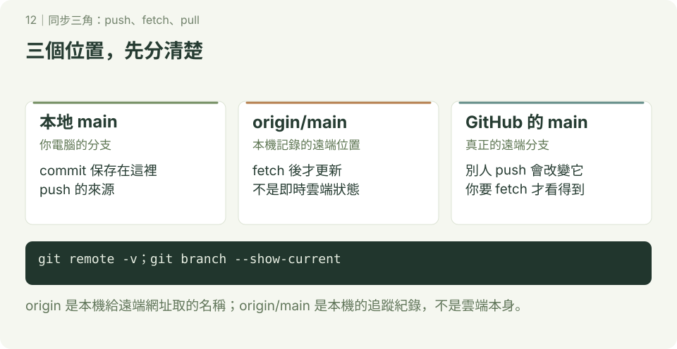

GitHub 基本操作
本章附 SVG 圖解；可先讀 互動版使用說明，再用瀏覽器開啟 docs/index.html#sync/1，按下一步觀察本地 main、origin/main 與 GitHub main 的位置。GitHub 的 README 顯示靜態圖，下載教材後即可離線操作互動版。
Git 管理本地版本，GitHub 提供遠端儲存庫與共同開發功能。先完成前四章，再準備本章的帳號與連線；合作實作見 GitHub 共同開發。

1. 提交身分與登入分開設定
git config user.name、user.email 寫入提交資訊，不會讓你取得 GitHub 權限。先申請 GitHub 帳號，再選一種 Git 連線方式：
- HTTPS：使用登入／憑證工具，必要時使用 personal access token。
- SSH：使用自己的金鑰，參考 SSH 設定。
GitHub 帳號密碼不能作為 HTTPS Git 操作的密碼。憑證設定見 憑證章節，不需要為了登入重建儲存庫。
2. 路線 A：已有遠端專案，從 clone 開始
下方 OWNER 與網址要換成實際帳號及儲存庫。先選未使用的資料夾位置：
git clone https://github.com/OWNER/class-team-demo.git
cd class-team-demo
git remote -v
git branch --show-current
git statusclone 自動設定 origin，並依遠端預設分支取出檔案。不需要再 init 或再次 remote add origin。本教材練習的預設分支是 main，其他專案請看實際名稱。
3. 路線 B：自己的本地專案，推到全新空白遠端
這是另一條獨立路線，不要接著路線 A 做。先在 GitHub 建立 class-first-repo，選擇適合的可見性，不要先新增 README、LICENSE 或 .gitignore，讓遠端保持空白；避免本地與遠端各自建立不相干的起點。
在終端機或 Git Bash 的新練習位置開始，確認 class-first-repo 尚未存在，已設定提交身分：
mkdir class-first-repo
cd class-first-repo
git init -b main
printf '# 我的第一個遠端專案\n' > README.md
git add README.md
git commit -m "建立專案說明"
git remote add origin https://github.com/OWNER/class-first-repo.git
git remote -v
git push -u origin mainOWNER 要替換。成功後重新整理 GitHub，應看到 README 與提交。-u 設定本地 main 的上游追蹤關係。已有自己的本地專案時，先確認目前分支、提交與遠端，不要重複執行初始化步驟。
如果遠端已經有 README，初學改走 clone 路線，把要加入的本地檔案複製進去、檢查後提交；不要用 force 覆蓋遠端，或隨意加上 --allow-unrelated-histories 合併無關歷史。
4. origin、origin/main、main 是什麼？
| 名稱 | 意思 |
|---|---|
| origin | 本機給遠端網址取的名稱，可以修改 |
| main | 本地分支 |
| origin/main | 本機記錄的遠端 main 位置，fetch 後更新 |
| GitHub 的 main | 真正保存在遠端的分支 |
origin/main 不是即時雲端狀態；別人 push 後，你尚未 fetch 時它可能還在舊位置。
5. fetch、pull、push（查詢用）
| 指令 | 做了什麼？ |
|---|---|
git fetch origin | 下載物件、更新遠端追蹤紀錄，不自動整合工作區 |
git pull --ff-only origin main | fetch 後只接受 fast-forward；分岔時拒絕 |
git pull --no-rebase origin main | fetch 後以 merge 整合，可能 fast-forward、建立合併提交或衝突 |
git pull --rebase origin main | fetch 後把自己的提交重套到遠端版本，可能改識別碼與遇到衝突 |
git push -u origin <任務分支> | 上傳指定分支並設定上游關係 |
pull 把指定來源整合到目前分支，不會因為寫 origin main 就自動切到本地 main。開始前先確認分支與工作區。單獨 pull 的行為受設定與版本影響，教材明確指定策略。
push 只上傳提交，不包含尚未提交的檔案，也不自動替你合併功能分支與 main。不要為方便一次推所有分支或標籤；先分享本次需要的版本。
6. 修改遠端與卡關
下面是依需要選用的查詢指令：
| 目的 | 指令 |
|---|---|
| 看遠端網址 | git remote -v |
| 更新已存在的 origin 網址 | git remote set-url origin <實際網址> |
| 移除 origin 設定 | git remote remove origin |
| 清理已消失的遠端分支追蹤紀錄 | git fetch --prune origin |
remove origin 只移除本機的遠端設定與相關追蹤紀錄，不會刪 GitHub 專案。push 出現 non-fast-forward 是遠端拒絕更新分支，不等於已發生檔案衝突；先 fetch 看歷史，參考 常見錯誤。
7. 路線 C：用 GitHub CLI 建立 repo 並直接 push
這是替代網站建庫的方式，三條路線三選一就好，不要把網站建庫與 CLI 建庫重複執行。想在終端機一次完成「建立遠端＋上傳」，就用這一條。
先確認已安裝 gh，再登入並檢查狀態：
gh --version
gh auth login
gh auth statusgh auth login 依提示選 GitHub.com、HTTPS、瀏覽器登入；gh auth status 有帳號與 token 狀態才算成功。這只代表 CLI 的登入，不代表 SSH 或其他 helper 用同一帳號。
照做：本地已有提交，一鍵建庫並上傳
這是另一條獨立路線，不要接著路線 A、B 做。在新練習位置開始，確認 class-cli-demo 尚未存在：
mkdir class-cli-demo
cd class-cli-demo
git init -b main
printf '# CLI 建立的專案\n' > README.md
git add README.md
git commit -m "建立專案說明"
git status --short確認 status 沒有輸出（已提交乾淨），且還沒有設定 origin，再執行：
git remote -v
gh repo create class-cli-demo --private --source=. --remote=origin --pushclass-cli-demo是遠端名稱，請換成自己的練習名稱。--private建私人庫，練習用建議先私人；要公開才改--public，建立後也可在網頁改可見性。--source=.指目前資料夾的本地專案，--remote=origin把遠端命名為 origin，--push建好後直接把 main 推上去。
預期 git remote -v 出現 origin 的 GitHub 網址，終端機顯示 push 進度，重新整理 GitHub 就看到 README 與提交。接著驗證：
git remote -v
git branch --show-current
git status --short
gh repo view --web預期目前分支是 main、status 沒有輸出，gh repo view --web 開啟剛建立的遠端頁面。之後新增提交照常用 git push，不需要每次都 gh repo create。
只建空庫、不上傳，何時用？
還沒有本地提交、只想先佔一個空遠端時，在任意位置執行：
gh repo create class-empty-demo --private這只建遠端，不設定 origin 也不 push，等同網站建庫的「空白遠端」。之後要上傳，走路線 B 的 remote add origin＋push -u origin main。已經用 --source=. --push 的人不要再重複建一次。
| 方式 | 適合情況 | 指令 |
|---|---|---|
| 網站建庫＋手動 push | 熟悉網頁流程 | 網頁建空白庫，再 remote add＋push -u origin main |
| CLI 一鍵建庫並上傳 | 本地已有提交，想一次推上 GitHub | gh repo create 名稱 --private --source=. --remote=origin --push |
| CLI 只建空庫 | 先佔遠端、稍後再傳 | gh repo create 名稱 --private |
卡關先查這三個
remote origin already exists：本地已有 origin，先用git remote -v確認，不要重複 create；要用 CLI 接管，先git remote remove origin再重來，或直接手動 push。- 名稱已存在：遠端已有同名庫，換一個名稱，或到網頁確認是不是自己之前建的。
- 可見性選錯：public／private 建完都可在 GitHub 儲存庫 Settings 改，不需要刪庫重建。作業、練習先用 private。
完成標準：能在 GitHub 找到自己上傳的提交，說出本地 main、origin/main 與遠端 main 的差別，並說出 gh repo create --source=. --push 與網站建庫的差別。接著完成 兩人 PR 練習。